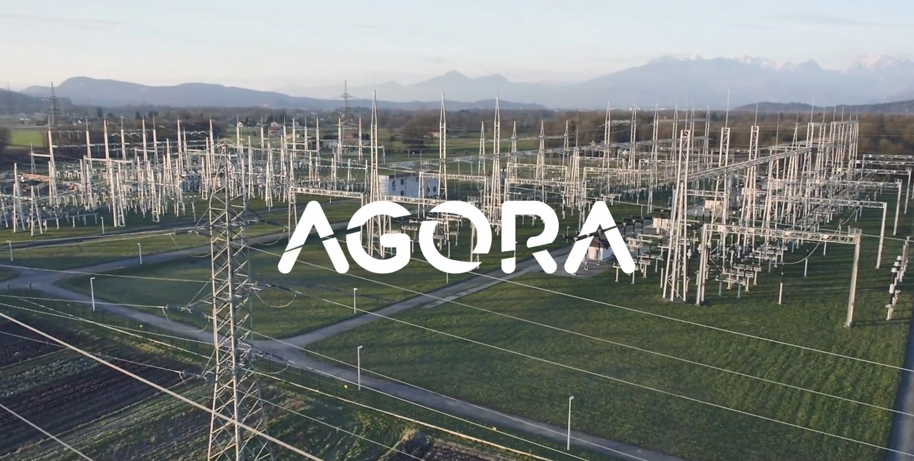
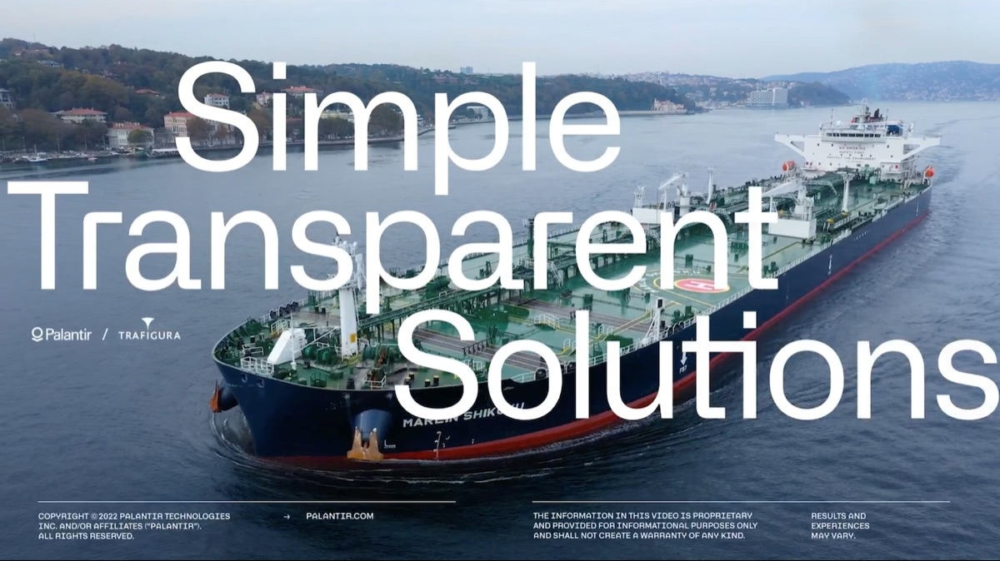
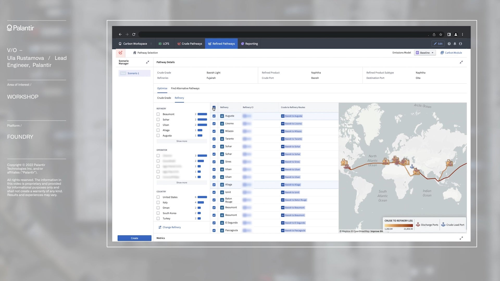
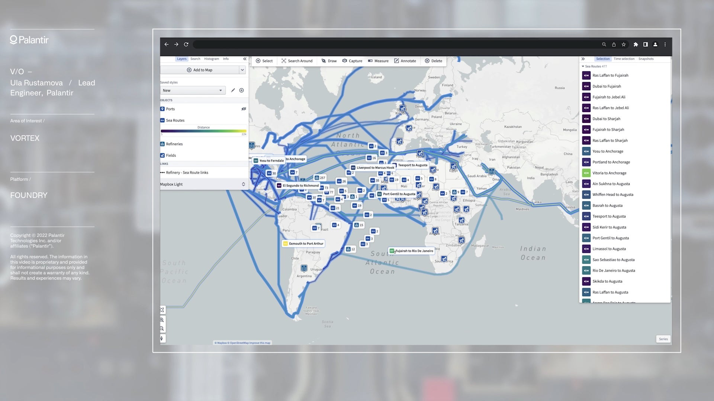

Trafigura + Palantir
To act on emissions, you first need visibility of them across your supply chains.
Both are possible with Foundry.

A Consortium Approach
This is going to be one of the biggest things we've ever done.
- Partner
- Trafigura
- Problem Space
Commodities
As the world transitions towards a net-zero economy, increasing accountability for emissions demands that organizations have visibility of where improvements can be made across their global supply chains.
- Solution
Trafigura adopted Palantir Foundry to create a Global Carbon Data Consortium platform. This will enable them to integrate data from across supply chains and work with their partners to simulate and implement lower emissions pathways across the commodities lifecycle.
- Problems Solved
↳ Integration
↳ Supply chain visibility
↳ Decision-orchestration

Informed and data-driven decision-making

Determine product-level carbon intensity
Replicate real-world supply chains by drawing on primary and industry data

Optimize for carbon intensity
Simulate an unlimited number of alternative supply chains to assess their carbon intensities